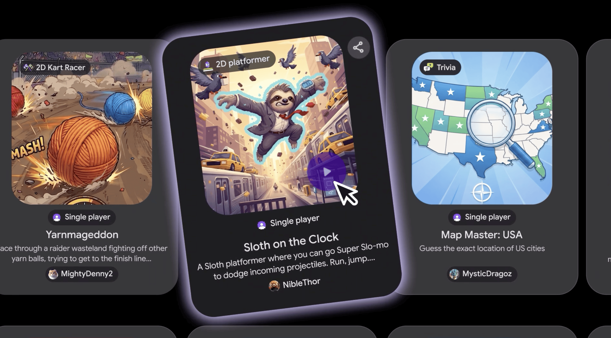

Playground — браузерная платформа от Google: описываешь идею игры текстом, и она собирается в готовый прототип. Начинаешь с чистого листа, готовых стартовых подсказок или направляющего режима — а дальше можно менять физику, переписывать правила, переделывать персонажей и окружение просто новыми сообщениями. Заявлено, что опыт программирования не нужен вообще: платформа позиционируется как инструмент, который «снижает порог создания».
Созданное можно оставить приватным, отправить ссылку друзьям или опубликовать в галерее Playground Explore. Играют прямо в браузере — с телефона или ноутбука. В отдельных жанрах уже доступны внутриигровые таблицы лидеров и мультиплеер, а с профилем Play Games можно завести собственный ник, ставить лайки и следить за авторами. Каждую публикуемую игру пропускают через автоматическую проверку на соответствие правилам сообщества, есть жалобы пользователей.
Playground открывается сегодня только в США и только для пользователей старше 18 лет — на playground.google. Пользоваться можно бесплатно, но недельные лимиты генераций зависят от подписки Google One: чем выше тариф, тем больше «токенов» на творчество. По словам представителя Google Нии Картер, под капотом — уже знакомые модели Gemini, Nano Banana и Lyria плюс собственная надстройка, отполированная на внутренних играх компании.
Вместе с Playground Google и Unity показали Unity Spark: это уже почти профессиональный движок с ИИ — качественная 3D-графика, серьёзные механики, совместное создание игр, а результаты можно публиковать всё в тот же Playground. Закрытая бета обещана до конца года, вайтлист открывается сегодня. Судя по анонсу, ставка делается на целый конвейер: от детской забавы из одной фразы до полноценной игры — на одной площадке.